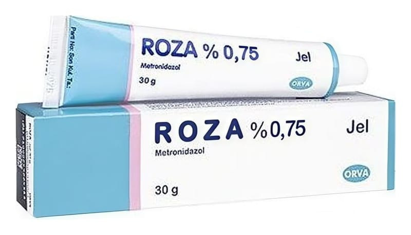

Roza %0,75 Jel, 30 g

Ne için kullanılır
KT · Bölüm 1ROZA, deri üzerine sürülerek kullanılan bir jeldir. Etkin madde olarak, 1 gramında 7,5 mg metronidazol içermektedir. Metronidazol, "Antiprotozoal (parazitlere karşı etkili) ve antibakteriyel (bakterilere karşı etkili) ilaçlar" olarak bilinen bir ilaç grubuna dahildir. ROZA; hafif sarımsı renkte, berrak ve bağdaşık (homojen) özelliklerde olup, 30 g jel içeren alüminyum tüplerde bulunmaktadır. ROZA; gül hastalığı olarak da bilinen rozasea’nın ve bu hastalığa bağlı olarak cilt üzerinde gelişen kabarcıkların, noktaların ve kızarıklıkların tedavisinde kullanılır.